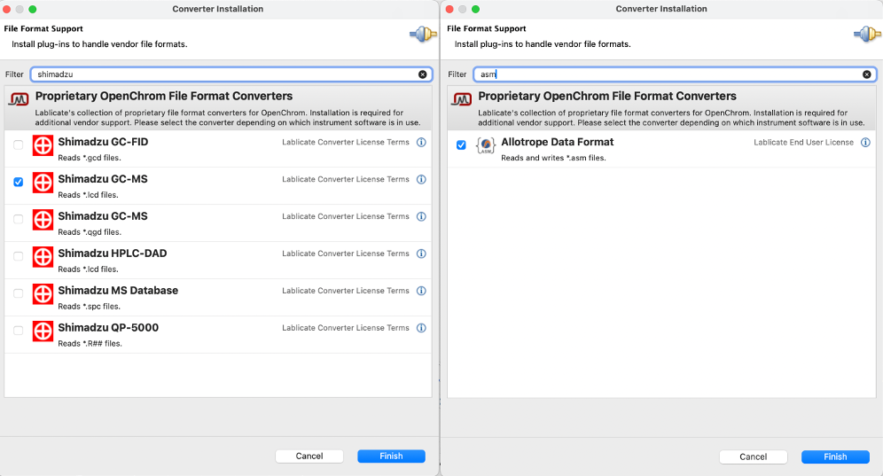
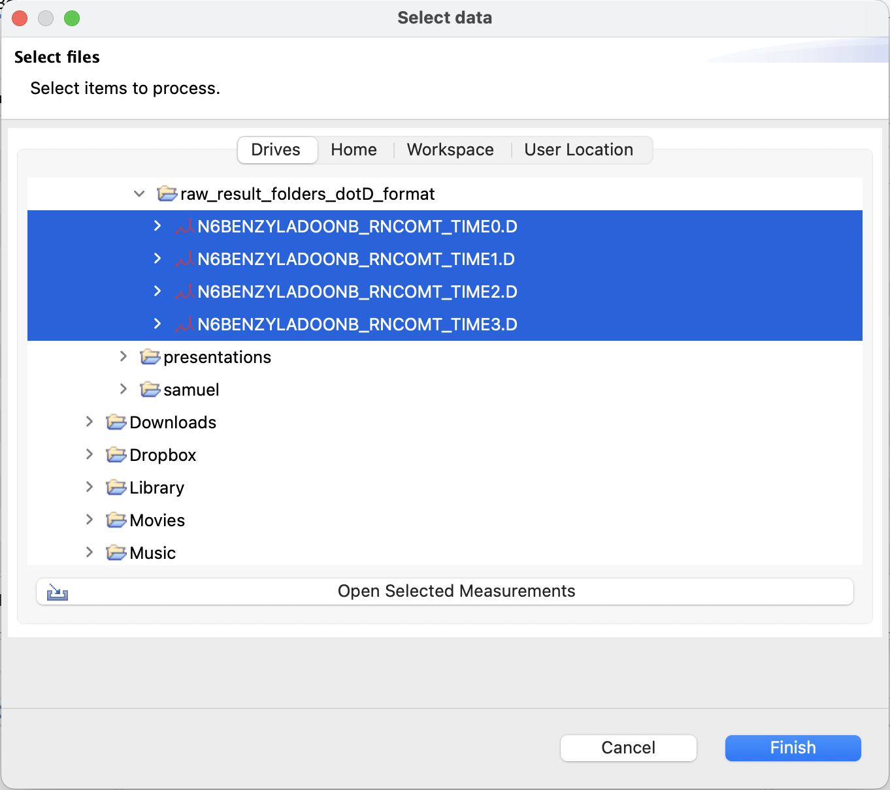
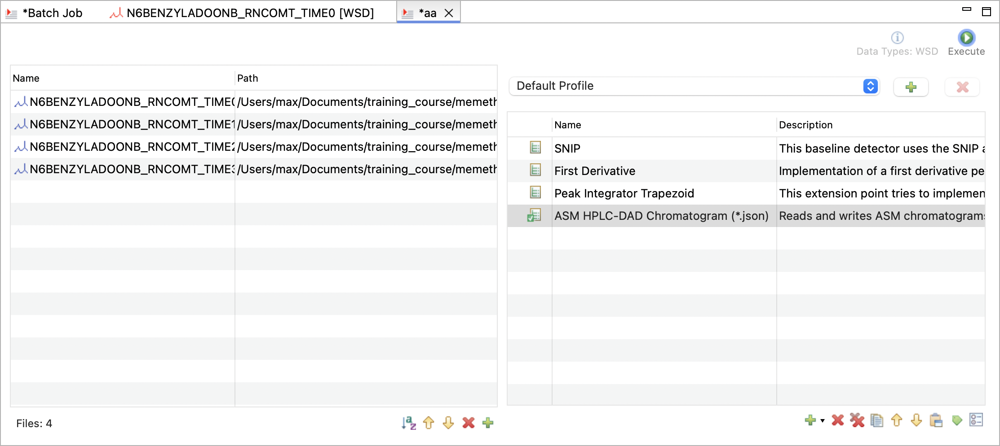

Data Preparation
chromhandler supports two fundamental analysis workflows:
🎯 Calibration Mode
- Purpose: Create calibration curves from standard samples
- Input: Peak tables of standard samples
- Output: Calibration models for concentration calculation
- Typical use: External standards, method validation
⏱️ Timecourse Mode
- Purpose: Track analyte concentrations over time
- Input: Peak tables of reaction mixtures at different time points
- Output: Time-resolved concentration data, EnzymeML documents
- Typical use: Enzyme kinetics, reaction monitoring
For facilitating swift processing of data, it has to be organized in a specific way.
📂 Data organization
chromhandler requires a specific organization of the measurement data of a time-course or calibration series. The scope of one analysis run is therefore eighter a single sample which is measured over time or a calibration series with multiple samples for different concentrations.
Example
An exemplary consisting of calibration mensurements and time-course data should be organized as follows:
Calibration data
- The set of calibration data files should be stored within a single folder.
- Deposit the concentration including the unit in the file name. E.g.
abts_1uM.jsonabts_50uM.jsonabts_300uM.json. In this case the concentration can be automatically extracted from the file name.
Time-course data
- All data files of a time-course series should be stored within a single folder.
- Name the folder after your sample ID. E.g.
B002. - Deposit the reaction time including the unit in the file name. E.g.
B002_12h.jsonB002_24h.jsonB002_36h.json. This allows to automatically extract the reaction time and unit from the file name.
🔧 Supported Formats
Most output data from chromatographic devices is vendor-specific and proprietary. However, OpenChrom, an open-source software that is free for academic use, provides the tools to convert proprietary data from almost all vendors into a vendor-neutral and machine-readable format, specifically the Allotrope Simple Model (ASM). A complete list of supported formats for pre-processing with OpenChrom can be found here.
Peak detection and integration with subsequent export to the ASM format is the recommended way to prepare data for subsequent processing with chromhandler. For information on how to batch process chromatographic data with OpenChrom, please refer to the section Spectrum Processing with OpenChrom.
Allotrope Simple Model
Info
The Allotrope Simple Model (ASM) is a JSON-based and vendor-independent format for analytical data. It is designed to store chromatographic measurement data.
The ASM format is the preferred format for data import. It can be exported from OpenChrom and contains the measured signal and data of all peaks which were processed by OpenChrom. The format is supported by chromhandler and can be imported directly.
Vendor specific formats
As an alternative to the ASM format, chromhandler supports the import of chromatographic data from various vendors. Samples of all supported formats are provided below.
File Examples
Data File C:\CHEM32\1\DATA\H 2023-07-24 21-36-55\001F0104.D
Sample Name: DFA-708-01
Instrument 1 7/24/2023 10:34:06 PM Group
=====================================================================
Acq. Operator : Group Seq. Line : 1
Acq. Instrument : Instrument 1 Location : Vial 1
Injection Date : 7/24/2023 10:22:05 PM Inj : 4
Inj Volume : 1000 µl
Sequence File : C:\Chem32\1\DATA\07-24 21-36-55\H.S
Method : C:\CHEM32\1\DATA\07-24 21-36-55\H.M (
Sequence Method)
Last changed : 7/24/2023 4:35:09 PM
=====================================================================
Area Percent Report
=====================================================================
Sorted By : Signal
Multiplier : 1.0000
Dilution : 1.0000
Use Multiplier & Dilution Factor with ISTDs
Signal 1: FID1 A,
Peak RetTime Type Width Area Height Area
# [min] [min] [pA*s] [pA] %
----|-------|----|-------|----------|----------|--------|
1 2.828 BB 0.0857 1.95364e4 3417.83057 99.52651
2 4.059 BB 0.0745 92.94276 18.85831 0.47349
Totals : 1.96294e4 3436.68888
Signal 2: TCD2 B,
Peak RetTime Type Width Area Height Area
# [min] [min] [25 uV*s] [25 uV] %
----|-------|----|-------|----------|----------|--------|
1 2.832 BB 0.0841 1090.67725 195.31581 1.000e2
Totals : 1090.67725 195.31581
=====================================================================
Summed Peaks Report
=====================================================================
Signal 1: FID1 A,
Signal 2: TCD2 B,
=====================================================================
Final Summed Peaks Report
=====================================================================
Signal 1: FID1 A,
Signal 2: TCD2 B,
*** End of Report ***
[contents]
count=1
Name=,D:\MassHunter\GCMS\RAU-R505-0.D
1=,INT TIC: RAU-R505-0.D\data.ms
[INT TIC: RAU-R505-0.D\data.ms]
Time=,Thu Jun 06 17:25:48 2024
Header=,"Peak","R.T.","First","Max","Last","PK TY","Height","Area","Pct Max","Pct Total"
1=, 1, 6.056, 856, 860, 880," M ",1366398, 13751453,100.00, 63.328
2=, 2, 6.302, 899, 903, 909," M ",1063632, 7963360, 57.91, 36.672
┌──────────────────────────────────────────────────────────────────────────────┐
│Cross Sequence Summary Report │
└──────────────────────────────────────────────────────────────────────────────┘
┌────────────────┬──────────────────────────────────────────────────────────┐
│Sample Name │M2_MJ_ │
│ │100_min │
└────────────────┴──────────────────────────────────────────────────────────┘
┌───────┬────────────────────────────────────────────────────────────────────┐
│Signal:│DAD1A,Sig=254,4 Ref=360,100 │
└───────┴────────────────────────────────────────────────────────────────────┘
┌───────┬───┬────────┬────────┬───────┬────────┬─────────────────────────────┐
│ RT │Typ│ Width │ Area │ Height│ Area% │Name │
│ [min] │e │ [min] │ │ │ │ │
├───────┼───┼────────┼────────┼───────┼────────┼─────────────────────────────┤
│ 0.698 │BV │ 0.4062 │ 53. │ 7.2642│ 0.3671 │ │
│ │ │ │ 0992 │ │ │ │
├───────┼───┼────────┼────────┼───────┼────────┼─────────────────────────────┤
│ 1.169 │VV │ 0.8468 │ 6094. │ 783.│ 42. │AMP@1,169min │
│ │ │ │ 3336 │ 0775│ 1289 │ │
├───────┼───┼────────┼────────┼───────┼────────┼─────────────────────────────┤
│ 2.756 │VB │ 0.4315 │ 14. │ 1.9341│ 0.0982 │ │
│ │ │ │ 2114 │ │ │ │
├───────┼───┼────────┼────────┼───────┼────────┼─────────────────────────────┤
│ 3.331 │BV │ 0.7823 │ 7620. │ 925.│ 52. │ADP@3,327min │
│ │ │ │ 7030 │ 5433│ 6804 │ │
├───────┼───┼────────┼────────┼───────┼────────┼─────────────────────────────┤
│ 3.974 │VB │ 1.5648 │ 381. │ 55.│ 2.6397 │ │
│ │ │ │ 8593 │ 0016│ │ │
├───────┼───┼────────┼────────┼───────┼────────┼─────────────────────────────┤
│ 5.770 │BB │ 1.0452 │ 301. │ 22.│ 2.0856 │ATP@5,720min │
│ │ │ │ 7014 │ 1066│ │ │
├───────┼───┼────────┼────────┼───────┼────────┼─────────────────────────────┤
│ │ │ Sum │ 14465. │ │ │ │
│ │ │ │ 9079 │ │ │ │
└───────┴───┴────────┴────────┴───────┴────────┴─────────────────────────────┘
┌───────────────────────────┬────────────────────────────────┬─────────────────┐
│D:\CDSProjects\JNS\Report │ Printed: 2024-10-20 │ Page 1 of 1 │
│Templates\Export_for_ │ 16:25:44+02:00 │ │
│python.rdl [Rev. 2.0] │ │ │
════════════════════════════════════════════════════════════════════════════════
[Header]
Application Name,LCsolution
Version,1.25
Data File Name,C:\LabSolutions\0.lcd
Output Date,12.12.2023.
Output Time,11:18:30
[File Information]
Type,Data File
Generated,21.2.2012. 13:16:32
Generated by,Admin
Modified,21.2.2012. 13:33:38
Modified by,Admin
[Sample Information]
Operator Name,Admin
Acquired,21.2.2012. 13:16:57
Sample Type,0:Unknown
Level,0
Sample Name,0
Sample ID,
ISTD Amount 1,1
ISTD Amount 2,1
ISTD Amount 3,1
ISTD Amount 4,1
ISTD Amount 5,1
ISTD Amount 6,1
ISTD Amount 7,1
ISTD Amount 8,1
ISTD Amount 9,1
ISTD Amount 10,1
ISTD Amount 11,1
ISTD Amount 12,1
ISTD Amount 13,1
ISTD Amount 14,1
ISTD Amount 15,1
ISTD Amount 16,1
ISTD Amount 17,1
ISTD Amount 18,1
ISTD Amount 19,1
ISTD Amount 20,1
ISTD Amount 21,1
ISTD Amount 22,1
ISTD Amount 23,1
ISTD Amount 24,1
ISTD Amount 25,1
ISTD Amount 26,1
ISTD Amount 27,1
ISTD Amount 28,1
ISTD Amount 29,1
ISTD Amount 30,1
ISTD Amount 31,1
ISTD Amount 32,1
Sample Amount,1
Dilution Factor,1
Vial#,1
Injection Volume,20
[Original Files]
Data File,C:\LabSolutions
Method File,C:\LabSolutions
Batch File,C:\LabSolutions
Report Format File,C:\LabSolutions
Tuning File,
[File Description]
[Configuration]
# of Detectors,2
Detector ID,Detector A,AD2
Detector Name,Detector A,AD2
# of Channels,1,1
[Peak Table(Detector A-Ch1)]
# of Peaks,14
Peak#,R.Time,I.Time,F.Time,Area,Height,A/H,Conc.,Mark,ID#,Name,k',Plate #,Plate Ht.,Tailing,Resolution,Sep.Factor,Conc. %,Norm Conc.
1,0.143,0.017,0.342,1278,107,11.9230,0.0000, ,,,0.000,4,41558.735,1.160,0.000,0.000,0.0000,0.0000
2,2.677,2.600,2.842,7633,868,8.7930,0.0000, ,,,17.675,2267,66.156,1.540,9.621,0.000,0.0000,0.0000
3,3.113,2.867,3.492,74069,3235,22.8950,0.0000, ,,,20.715,284,528.740,0.000,0.904,1.172,0.0000,0.0000
4,3.674,3.492,4.225,62448,1896,32.9390,0.0000, V ,,,24.632,195,767.696,0.000,0.627,1.189,0.0000,0.0000
5,4.541,4.225,4.858,61821,2075,29.7890,0.0000, V ,,,30.681,11,13168.368,0.000,0.270,1.246,0.0000,0.0000
6,5.264,4.858,6.025,591150,23289,25.3830,0.0000, V ,,,35.719,1559,96.223,0.000,0.244,1.164,0.0000,0.0000
7,6.234,6.025,6.417,69898,3040,22.9950,0.0000, V ,,,42.488,8,18539.786,0.000,0.209,1.189,0.0000,0.0000
8,6.570,6.417,6.708,51229,2962,17.2940,0.0000, V ,,,44.832,6,27270.488,0.000,0.034,1.055,0.0000,0.0000
9,7.099,6.708,7.442,271461,9085,29.8790,0.0000, V ,,,48.524,1106,135.634,0.000,0.088,1.082,0.0000,0.0000
10,8.063,7.442,8.950,2838883,74297,38.2100,0.0000, V ,1,RT8.063,55.243,1156,129.804,0.000,1.069,1.138,0.0000,0.0000
11,9.083,8.950,10.367,458569,7811,58.7060,0.0000, V ,,,62.362,26,5780.190,0.000,0.253,1.129,0.0000,0.0000
12,10.392,10.367,11.067,150804,3848,39.1900,0.0000, V ,,,71.492,1,157400.235,0.000,0.053,1.146,0.0000,0.0000
13,11.391,11.067,12.442,273652,3881,70.5040,0.0000, V ,,,78.463,96,1566.775,0.000,0.042,1.098,0.0000,0.0000
14,12.567,12.442,14.967,184099,2616,70.3870,0.0000, V ,,,86.664,13,11724.488,0.000,0.126,1.105,0.0000,0.0000
[Peak Table(AD2)]
# of Peaks,0
[Peak Table(PDA-Ch1)]
# of Peaks,0
[Compound Results(Detector A)]
# of IDs,1
ID#,Name,R.Time,Area,Height,Conc.,Curve,3rd,2nd,1st,Constant,Conc. %,Norm Conc.
1,RT8.063,8.063,2838883,74297,0.0000,Linear,0.0,0.0,0.0,0.0,0.0000,0.0000
[Compound Results(AD2)]
# of IDs,0
[Compound Results(PDA)]
# of IDs,0
[Group Results(Detector A)]
# of Groups,0
[Group Results(AD2)]
# of Groups,0
[Group Results(PDA)]
# of Groups,0
[LC Chromatogram(Detector A-Ch1)]
Interval(msec),500
# of Points,1801
Start Time(min),0.000
End Time(min),15.000
Intensity Units,mV
Intensity Multiplier,0.001
Wavelength(nm),215
R.Time (min),Intensity
0.00000,-132
0.00833,-132
0.01667,-52
0.02500,3
0.03333,8
...
Filepath C:¥Chromel¥data¥HPLC¥2_Data¥UV_VIS_1.CHL¥20.acd
Channel UV_VIS_1
Sample Information:
Datasource BCI
Sequence HPLC¥2_Data
Sample A 1,0 mM
Sample Number 31
Sample Position RD3
Sample ID 20
Comment
QNT method 20211221
PGM file 20230109
Type standard
Status finished
Date 02.02.2023
Time 16:12:23
Injection Volume (ｵl) 10,00
Dilution Factor 1,000000
Amount 1,000000
Weight 1,000000
Raw Data Header Information:
Time Min. (min) 0,000
Time Max. (min) 44,000
Raw-Time Min. (min) 0,000
Raw-Time Max. (min) 44,000
Data Points 26401
Detector VWD3000.dll
Preferred Read Mode Unknown
Write Mode Unknown
Data System Chromeleon
Version High 06
Version Low 80
Build No. 3160
File Format Version 11
Generation Type 8
File ID 239054205
File Status 16
GUID 8ce9b975
Signal Factor 0,000010
Signal Dimension mAU
Signal Unit Absorbance
Signal Min. -2,8254
Signal Max. 576,766300
Channel Name UV_VIS_1
Driver Name VWD-3x00(RS) Detector
Min. Step 10
Max. Step 10
Average Step 10
Signal Parameter Information:
Signal Info WVL:254 nm
Wavelength 254 nm
Raw Data:
Time(min) Step(sec) Value(mAU)
0,000000 0,00 0,125090
0,001667 0,10 0,125010
0,003333 0,10 0,124540
0,005000 0,10 0,124710
0,006667 0,10 0,123320
0,008333 0,10 0,123160
...
🌈 Spectrum Processing with OpenChrom (from Lablicate)
Info
OpenChrom is an open‑source application for chromatography, spectrometry and spectroscopy. It natively imports data from most GC/MS, GC/FID, HPLC‑DAD and related instruments, offers high‑throughput batch processing (baseline correction, peak detection/integration, reporting) and exports results to the vendor‑independent Allotrope Simple Model (ASM) format—ready for use with chromhandler.
Installation & plug‑in setup
- Download the current OpenChrom release from the official site and install it.
- Activate the Allotrope Simple Model (ASM) plugin (free for academic use) to export the data in the ASM format.
- Add import converters – in OpenChrom choose
Plug‑ins ➜ Install Converters, search for your vendor (e.g. Agilent, Waters, Shimadzu) and install the matching plug‑ins.
For ASM export, search for asm and install the Allotrope Simple Model plug‑in.

Batch processing
-
Open OpenChrom and navigate to
Chromatogram>Batch Process. -
A new window will open, where you need to specify a new Project. Afterwards, a name for the Batch Process can be defined.
-
Now the Chromatogram Batch Process mode needs to be defined. Depending on you data, one of the following modes can be selected. The processing might fail if the wrong mode is selected.
WSD: Wavelength Spectrum DataMSD: Mass Spectrum DataCSDVSD
-
Now a Batch Job window is opened. The window is divided into the left side, where files can be added, and the right side, where the processing steps can be defined.
-
Add the files you want to process by clicking on the icon in the bottom of the left side. The files can be selected from the file system. 
-
Add proccessing steps by clicking on the icon in the bottom of the right side. The following steps are recommended for peak processing and can be added with default parameters:
Baseline Detector>SNIPPeak Detector>First DerivativePeak Integrator>Peak Integrator TrapezoidChromatogram Export>ASM ... (*.json)then define the output folder.
-
Run the batch process by clicking on the Execute icon in the top right corner. 
-
After the processing is finished, the data can be imported with
chromhandler.
What if my data cannot be processed with OpenChrom?
If the OpenChrom converter for your data does not work as expected, please check the OpenChroms Issues, if it is a known issue. If not, consider submitting an issue to the OpenChrom repository.